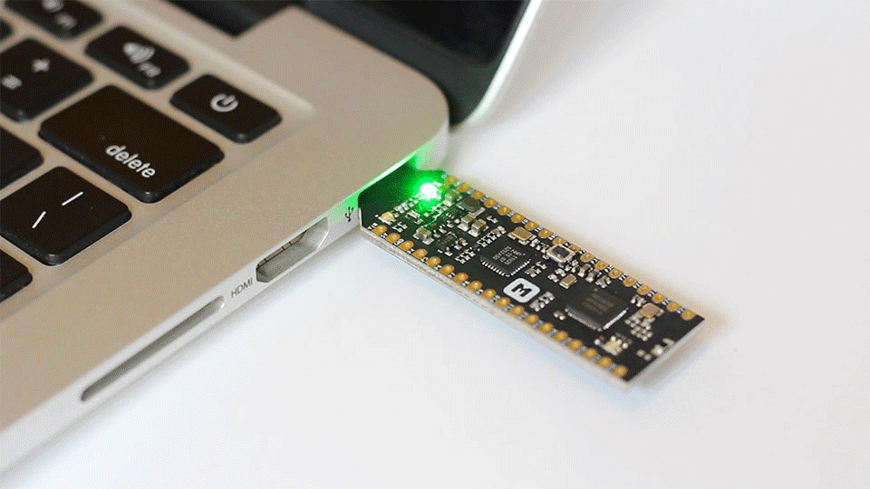

nRF5 SDK
Software Development Kit for nRF51 and nRF52 Series¶
Introduction¶
The nRF5 SDK provides a rich developing environment for nRF5 Series devices by including a broad selection of drivers, libraries, examples for peripherals, SoftDevices, and proprietary radio protocols.
The SDK is delivered as a plain .zip-archive, which makes it easy to install as well as giving you the freedom to choose the IDE and compiler of your choice.
We provide example applications that you can run on your nRF52832-MDK to ensure that everything is set up correctly. After these tests, you can use the examples as starting point to develop your own applications.
Before we begin, we need to install some software components to build our example applications. Here we recommend GNU Arm Embedded Toolchains as they are free and open-source.
Installing GNU Arm Embedded Toolchain¶
The GNU Arm Embedded toolchains are integrated and validated packages featuring the Arm Embedded GCC compiler, libraries and other GNU tools necessary for bare-metal software development on devices based on the Arm Cortex-M and Cortex-R processors. The toolchains are available for cross-compilation on Microsoft Windows, Linux and macOS host operating systems.
These toolchains are based on Free Software Foundation's (FSF) GNU Open source tools and newlib.
The pre-built GNU Arm Embedded Toolchain can be downloaded using the following link:
Download and install the latest version. Then make sure to add the path to your toolchain to your OS PATH environment variable:
<path to install directory>/gcc-arm-none-eabi-7-2017-q4-major/bin
Adding the path makes it possible to run the toolchain executables from any directory using the terminal. To verify that the path is set correctly, type the following in your terminal:
$ arm-none-eabi-gcc --version

Installing GNU make¶
Now with the toolchain installed we can build object files from source code, but to build projects based on makefiles, which can be seen as a recipes for the builds, we need to have GNU make installed on the system.
On Windows the easiest way to install the dependencies is to use the MSYS2. You can do so by performing the following steps:
-
Download and run the installer - "x86_64" for 64-bit, "i686" for 32-bit Windows.
-
Update the package database and core system packages with:
$ pacman -Syu
-
If needed, close MSYS2, run it again from Start menu. Update the rest with:
$ pacman -Su
-
Install dependencies:
$ pacman -S git make python2
Linux and macOS already have the necessary shell commands, but GNU make may not be a part of the standard distro. Call make -v from the terminal to check whether it is installed or not. GNU make would need to be installed if it's not recognized as a command.
GNU make is bundled with Xcode tools if working on macOS.
On Linux it may be different ways to obtain GNU make depending on your distro, if not installed already. On Ubuntu you can get by entering this command:
$ sudo apt-get install build-essential checkinstall

Installing the nRF5 SDK¶
Download the SDK file nRF5_SDK_x.x.x_xxxxxxx.zip (for example, nRF5_SDK_v14.2.0_17b948a.zip) from developer.nordicsemi.com.
The latest version is 14.2.0, it can be downloaded directly here:
Extract the zip file to the nrf52832-mdk repository. This should give you the following folder structure:
./nrf52832-mdk/ ├── LICENSE ├── README.md ├── README_CN.md ├── bin ├── docs ├── examples ├── mkdocs.yml ├── nrf_sdks │ └── nRF5_SDK_14.2.0_17b948a └── tools
To build an example application you first need to set the toolchain path in makefile.windows or makefile.posix depending on platform you are using. That is, the .posix should be edited if your are working on either Linux or macOS. These files are located in:
<SDK>/components/toolchain/gcc
Open the file in a text editor (Sublime is recommended), and make sure that the GNU_INSTALL_ROOT variable is pointing to your GNU Arm Embedded Toolchain install directory.
GNU_INSTALL_ROOT := $(HOME)/gcc-arm-none-eabi/gcc-arm-none-eabi-7-2017-q4-major/bin/ GNU_VERSION := 7.2.1 GNU_PREFIX := arm-none-eabi
Compiling and running blinky example¶
Now you can try to build one of the examples. Will use the blinky example here to keep it simple.
Open terminal and change directory to:
$ cd ./nrf52832-mdk/examples/nrf5-sdk/blinky/armgcc/
Connect the nRF52832-MDK to one of your PC's USB host ports. Compile and program the example:
$ make flash
Observe that the LEDs are blinking:

Running examples that use a SoftDevice¶
Before you can run more advanced examples that use Bluetooth or ANT, you must program the SoftDevice on the board.
The SoftDevice binary is located in folder components/softdevice/SoftDevice/hex in the SDK, where SoftDevice is the name of the SoftDevice. You can also download SoftDevices from nordicsemi.com.
The easiest way to program the SoftDevice is using the GCC makefile of an example:
-
Open a command prompt in the folder that contains the makefile of an example. The example must require a SoftDevice. For example, the
ble_app_blinkyexample. -
Run the following command:
# this will program SoftDevice alone $ make flash_softdeviceOr
# this will program the application with SoftDevice $ make flash_all
More examples¶
Over time, more example applications will be added to the repository. You can star or watch the nrf52832-mdk repository to stay up to date.
Reference¶
Any Issue ?¶
Interested in contributing to this project? Want to report a bug? Feel free and click here: